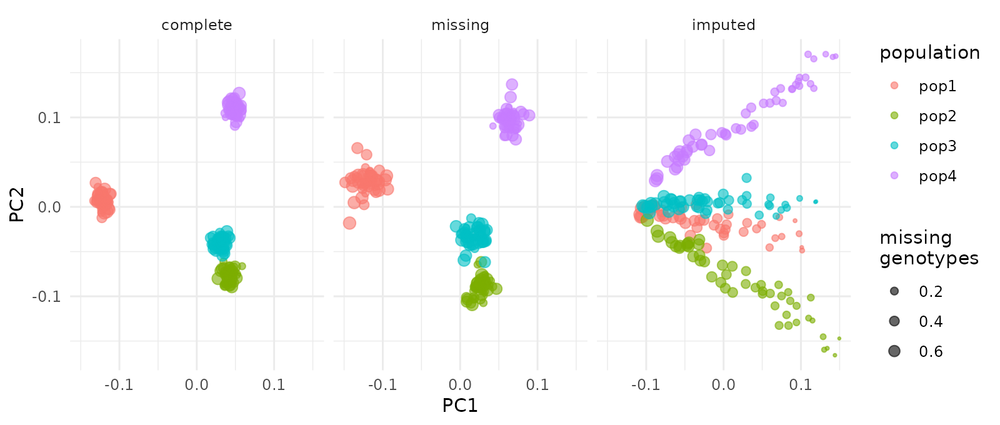
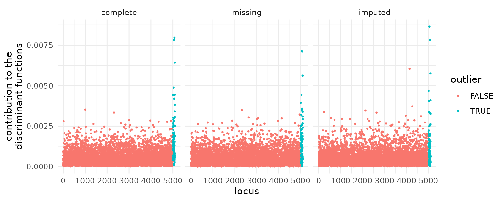

Missing genotypes: impute only when you must
Source:vignettes/articles/missing_data.Rmd
missing_data.RmdMost datasets have missing genotypes, and many tools ask for them to be imputed first. Simple imputation (e.g. with the most common genotype of each locus) is fast, but it is not neutral: an individual with many missing genotypes receives many copies of the same, typical genotypes, which pull it towards the centre of the data and make the individuals with much missing data look alike. Missingness then becomes a signal of its own.
tidypopgen avoids this where it can. The default PCA,
gt_pca(), compares each pair of individuals over the loci
genotyped in both (as plink --pca does).
gt_dapc() and gt_pcadapt() work on that PCA:
DAPC estimates the loadings of each locus over the individuals genotyped
at it, and pcadapt tests each locus on the individuals genotyped at it.
LD clumping (loci_ld_clump()) and pruning
(loci_ld_prune()) compute the correlation between two loci
over the individuals genotyped at both, as PLINK does. Imputation is
only needed by the methods that require complete genotypes, such as
gt_pca(method = "random") (for very large numbers of
individuals) and gt_pca_autoSVD().
This article compares the two approaches on simulated data, where we know the truth.
Simulated data
We simulate 4 populations of 50 individuals with the Balding-Nichols
model (gt_simulate_bn()): 5,000 neutral loci
(FST = 0.05), and 100 outlier loci strongly differentiated in
the first population (FST = 0.7 in that population), as loci
under selection would be. Each individual misses a proportion of its
genotypes, from 0 to 80% (as is common, e.g., with ancient DNA), at
random loci. Since gt_simulate_bn() draws the genotypes
before the missing ones, the same seeds give the complete data, our
truth. We group each gen_tibble by population as soon as we
create it.
library(tidypopgen)
#> Loading required package: dplyr
#>
#> Attaching package: 'dplyr'
#> The following objects are masked from 'package:stats':
#>
#> filter, lag
#> The following objects are masked from 'package:base':
#>
#> intersect, setdiff, setequal, union
#> Loading required package: tibble
library(ggplot2)
n_indiv <- rep(50, 4)
set.seed(42)
missing_rate <- runif(sum(n_indiv), 0, 0.8)
simulate_data <- function(missing) {
set.seed(1)
neutral <- gt_simulate_bn(
n_indiv = n_indiv, n_loci = 5000, fst = 0.05, missing = missing
)
set.seed(2)
outliers <- gt_simulate_bn(
n_indiv = n_indiv, n_loci = 100, fst = c(0.7, 0.05, 0.05, 0.05),
missing = missing
)
gen_tibble(
x = cbind(show_genotypes(neutral), show_genotypes(outliers)),
indiv_meta = data.frame(id = neutral$id, population = neutral$population),
loci = data.frame(
name = c(paste0("neutral", 1:5000), paste0("outlier", 1:100)),
chromosome = "1", position = 1:5100 * 1000L, genetic_dist = 0,
allele_ref = "A", allele_alt = "G"
),
backingfile = tempfile(), quiet = TRUE
)
}
complete_gt <- simulate_data(missing = 0) %>%
group_by(population)
missing_gt <- simulate_data(missing = missing_rate) %>%
group_by(population)
# keep the loci that are polymorphic in the data with missing genotypes
polymorphic <- loci_names(missing_gt)[loci_maf(missing_gt$genotypes) > 0]
complete_gt <- complete_gt %>% select_loci(all_of(polymorphic))
missing_gt <- missing_gt %>% select_loci(all_of(polymorphic))
outlier <- startsWith(polymorphic, "outlier")
missing_gt
#> # A gen_tibble: 5100 loci
#> # A tibble: 200 × 3
#> # Groups: population [4]
#> id population genotypes
#> <chr> <chr> <vctr_SNP>
#> 1 ind1 pop1 [.,.,...]
#> 2 ind2 pop1 [.,.,...]
#> 3 ind3 pop1 [.,.,...]
#> 4 ind4 pop1 [.,.,...]
#> 5 ind5 pop1 [.,.,...]
#> 6 ind6 pop1 [.,1,...]
#> 7 ind7 pop1 [.,.,...]
#> 8 ind8 pop1 [1,.,...]
#> 9 ind9 pop1 [0,.,...]
#> 10 ind10 pop1 [.,0,...]
#> # ℹ 190 more rowsWe also impute the missing genotypes, with the most common genotype
of each locus. The imputed genotypes are stored alongside the original
ones, and are only used when we ask for them, with
gt_set_imputed():
missing_gt <- gt_impute_simple(missing_gt, method = "mode")PCA
We run three PCAs: of the complete genotypes (the truth), of the genotypes with missing values (compared pairwise, without imputation), and of the imputed genotypes.
pca_complete <- gt_pca(complete_gt, k = 5)
pca_missing <- gt_pca(missing_gt, k = 5)
gt_set_imputed(missing_gt, set = TRUE)
pca_imputed <- gt_pca(missing_gt, k = 5)
gt_set_imputed(missing_gt, set = FALSE)
pca_missing
#> === PCA of gen_tibble object ===
#> Method: [1] "partial"
#>
#> Genotypes: with missing genotypes (compared pairwise)
#>
#> Call ($call):gt_pca(x = missing_gt, k = 5)
#>
#> Eigenvalues ($d):
#> 186.492 173.998 171.601 100.277 99.455
#>
#> Principal component scores ($u):
#> matrix with 200 rows (individuals) and 5 columns (axes)
#>
#> Loadings (Principal axes) ($v):
#> matrix with 5100 rows (SNPs) and 5 columns (axes)To compare them, we plot the first two components of each PCA (with their signs matched to those of the truth), and colour the individuals by population, with larger points for those with more missing genotypes:
# the scores of the first k components, with their signs matched to the
# complete data
matched_scores <- function(pca, k = 3) {
u <- pca$u[, 1:k]
sweep(u, 2, sign(diag(stats::cor(u, pca_complete$u[, 1:k]))), "*")
}
pcas <- list(
complete = pca_complete, missing = pca_missing, imputed = pca_imputed
)
scores <- do.call(rbind, lapply(names(pcas), function(method) {
u <- matched_scores(pcas[[method]])
data.frame(
method = method, population = missing_gt$population,
missing = indiv_missingness(missing_gt), PC1 = u[, 1], PC2 = u[, 2]
)
}))
scores$method <- factor(scores$method, levels = names(pcas))
ggplot(scores, aes(PC1, PC2, colour = population, size = missing)) +
geom_point(alpha = 0.6) +
facet_wrap(~method) +
scale_size_continuous(range = c(0.5, 3)) +
labs(size = "missing\ngenotypes") +
theme_minimal()
The PCA of the genotypes with missing values recovers the populations of the complete data, however many genotypes an individual misses. With imputation, the individuals with many missing genotypes are drawn together, whatever their population, and the first component orders the individuals by their missing genotypes rather than by population. The correlations of the components with those of the truth, and with the proportion of missing genotypes of each individual, show it:
pc_cor <- function(pca) {
u <- matched_scores(pca)
c(
stats::setNames(
abs(diag(stats::cor(u, pca_complete$u[, 1:3]))),
paste("truth, PC", 1:3)
),
stats::setNames(
abs(stats::cor(u, indiv_missingness(missing_gt)))[, 1],
paste("missingness, PC", 1:3)
)
)
}
round(sapply(pcas[-1], pc_cor), 2)
#> missing imputed
#> truth, PC 1 0.98 0.25
#> truth, PC 2 0.97 0.85
#> truth, PC 3 0.99 0.32
#> missingness, PC 1 0.15 0.99
#> missingness, PC 2 0.03 0.03
#> missingness, PC 3 0.13 0.12DAPC
We run a DAPC on each PCA, with the populations as groups. With a PCA
of missing genotypes, gt_dapc() needs the
gen_tibble (data) to estimate the loadings of
the loci over the individuals genotyped at each of them; loci with more
than half of their genotypes missing (max_missing) get
NA loadings, as, estimated from few individuals, they would
be noisy:
pops <- as.factor(missing_gt$population)
dapc_complete <- gt_dapc(pca_complete, pop = pops, n_pca = 3)
dapc_missing <- gt_dapc(pca_missing, pop = pops, n_pca = 3, data = missing_gt)
dapc_imputed <- gt_dapc(pca_imputed, pop = pops, n_pca = 3)We compare the proportion of individuals assigned to their population, the number of outlier loci among the 100 loci that contribute most to the discriminant functions (summed over the axes), and the rank correlation of these contributions with those of the complete data:
dapcs <- list(
complete = dapc_complete, missing = dapc_missing, imputed = dapc_imputed
)
top_outliers <- function(stat, n = 100) sum(outlier[order(-stat)[1:n]])
contribution <- function(x) rowSums(x$var.contr, na.rm = TRUE)
round(sapply(dapcs, function(x) {
c(
"correctly assigned" = mean(x$assign == pops),
"outliers in top 100 loci" = top_outliers(contribution(x)),
"correlation with complete" = stats::cor(contribution(x),
contribution(dapc_complete),
method = "spearman"
)
)
}), 2)
#> complete missing imputed
#> correctly assigned 1 1.00 0.86
#> outliers in top 100 loci 30 26.00 18.00
#> correlation with complete 1 0.87 0.51Without imputation, the DAPC assigns the individuals as it does with the complete data, and the contributions of the loci are close to those of the complete data. With imputation, some individuals with many missing genotypes are assigned to the wrong population, and fewer outliers stand out.
In the contributions of the loci (summed over the discriminant axes), the outlier loci (the last 100) stand out in all three analyses, but those of the data with missing genotypes look most like those of the complete data; with imputation, more neutral loci reach high contributions:
contributions <- do.call(rbind, lapply(names(dapcs), function(method) {
data.frame(
method = method, locus = seq_along(outlier),
contribution = contribution(dapcs[[method]]), outlier = outlier
)
}))
contributions$method <- factor(contributions$method, levels = names(dapcs))
ggplot(contributions, aes(locus, contribution, colour = outlier)) +
geom_point(size = 0.5) +
facet_wrap(~method) +
labs(y = "contribution to the\ndiscriminant functions") +
theme_minimal()
pcadapt
Finally, we scan for outlier loci with pcadapt, on 3 components of
each PCA. With the PCA of missing genotypes, gt_pcadapt()
tests each locus on the individuals genotyped at it; with the PCA of
imputed genotypes, it uses the imputed genotypes:
pcadapt_complete <- gt_pcadapt(complete_gt, pca_complete, k = 3)
pcadapt_missing <- gt_pcadapt(missing_gt, pca_missing, k = 3)
pcadapt_imputed <- gt_pcadapt(missing_gt, pca_imputed, k = 3)
pcadapts <- list(
complete = pcadapt_complete, missing = pcadapt_missing,
imputed = pcadapt_imputed
)
round(sapply(pcadapts, function(x) {
c(
"outliers in top 100 loci" = top_outliers(x$score),
"correlation with complete" = stats::cor(x$score, pcadapt_complete$score,
method = "spearman", use = "complete.obs"
)
)
}), 2)
#> complete missing imputed
#> outliers in top 100 loci 32 29.00 15.00
#> correlation with complete 1 0.87 0.55Without imputation, pcadapt finds almost as many outliers as with the
complete data, and ranks the loci much as the complete data do (the 18
loci with more than half of their genotypes missing are not tested, as
with gt_dapc(), and are left out of the correlation). With
imputation, one of the components that pcadapt uses reflects missingness
rather than populations, and fewer outliers are found.
When to impute
Use the genotypes with their missing values whenever the analysis
can: the default gt_pca() (and
pairwise_grm(method = "plink")), gt_dapc(),
gt_pcadapt(), predict() of a PCA (least
squares projection), loci_ld_clump() and
loci_ld_prune(), and the pairwise_*(),
indiv_*(), loci_*() and pop_*()
statistics.
Impute (e.g. with gt_impute_simple(), and
gt_set_imputed() to use the imputed genotypes) only for the
methods that need complete data, such as
gt_pca(method = "random") and
gt_pca_autoSVD(); those functions say so if they find
missing genotypes.